ERP
- faltam relatórios
- informação chega atrasada
Sua empresa foi construída para durar. A operação precisa acompanhar. Estruturamos processo, informação e tecnologia de ponta a ponta — sem mudar o que já deu certo.
O que está em jogo
O gap de adoção
A tecnologia evoluiu em ritmo exponencial e o gap de adoção faz com que surjam ineficiências que sugam a margem dos negócios.
Onde a operação trava
Além do chão de fábrica
A operação roda no escuro.
Nada disso aparece como prejuízo no balanço. Aparece como retrabalho, hora extra, entrega atrasada — e atrito no relacionamento com o cliente.
É por isso que a Origami Lab existe.
Quem somos
Modernizar não é abrir mão do que deu certo. É fortalecer o legado.
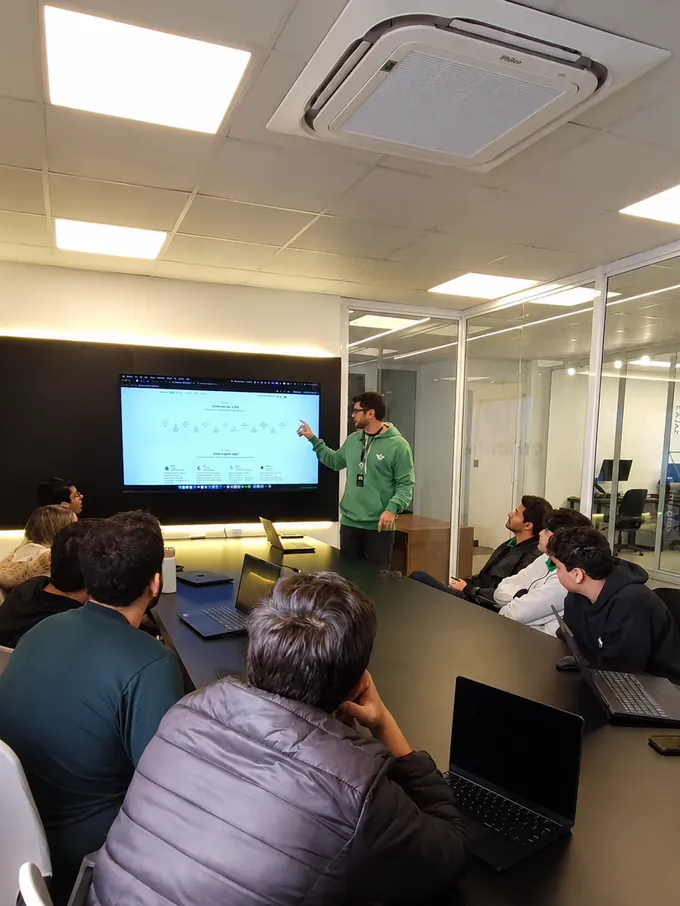
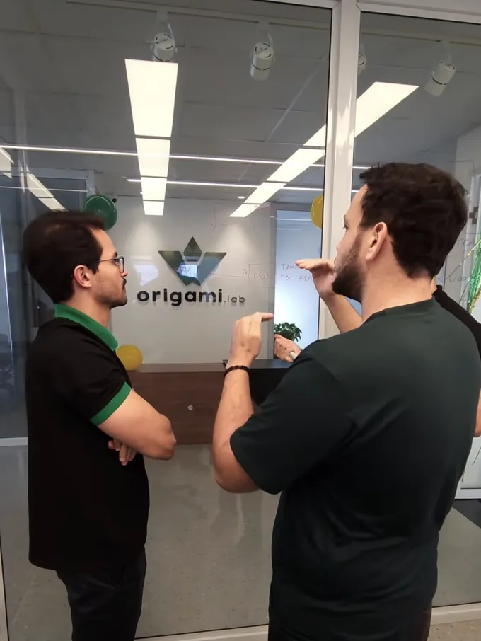
O seu legado em boas mãos
Antes da Origami, os nossos sócios construíram soluções dentro de algumas das maiores operações do país.
Desenvolvimento e implantação
O que acontece na ponta chega na hora, sem papel nem digitação no caminho.
Do pedido à expedição, num fluxo só — com rastro de quem fez e quando.
O que já funciona continua de pé. O retrabalho entre um e outro acaba.
Construímos, implantamos, treinamos pessoas e acompanhamos até a operação rodar sozinha.
Quem já confia
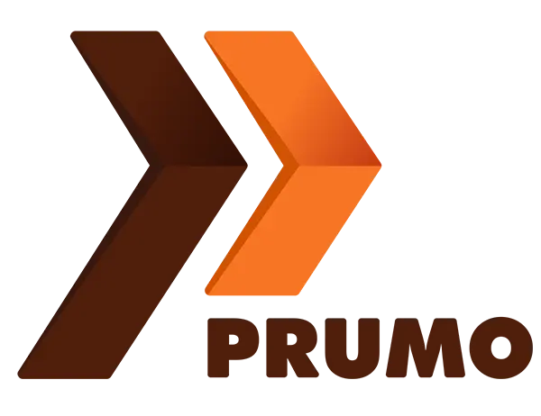
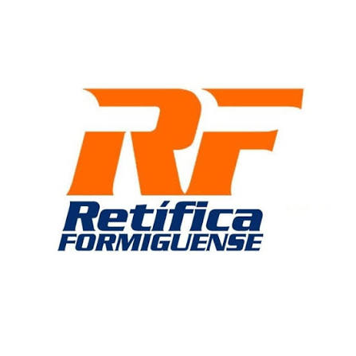
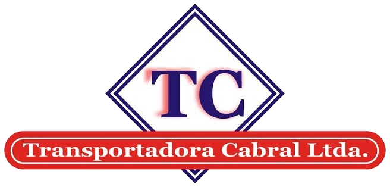
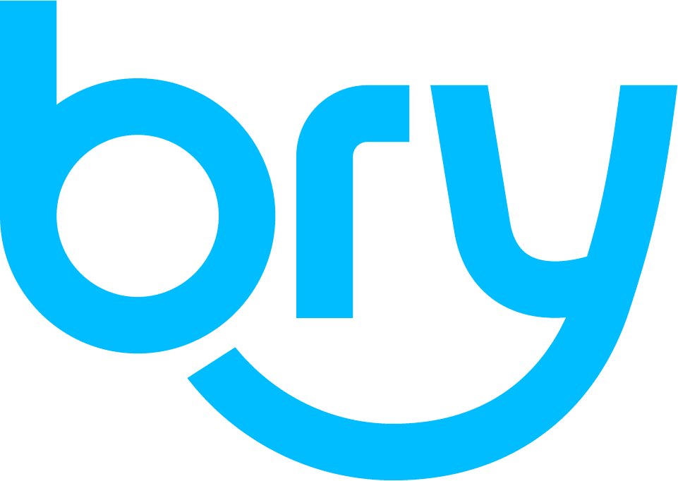
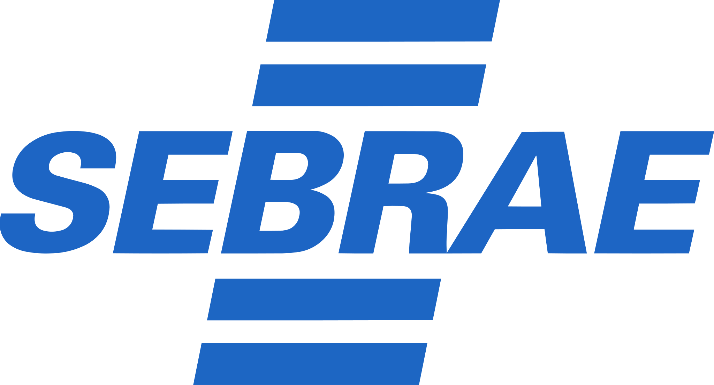
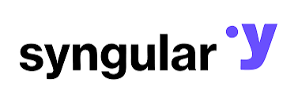
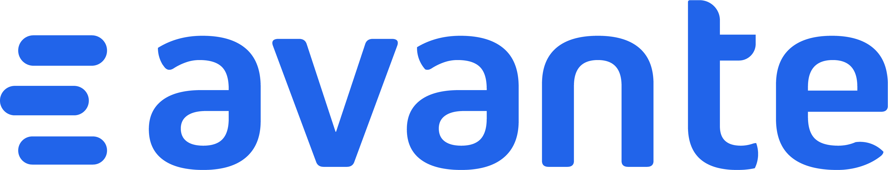
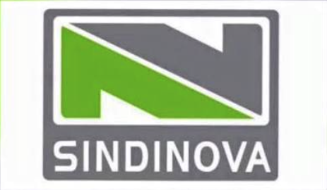
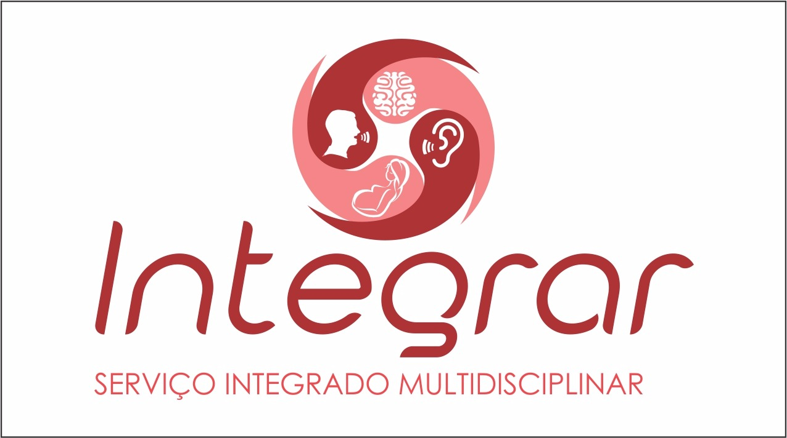
Três frentes, uma só operação
Desenvolvimento de software do Pedido ao Pós-vendas, para que a liderança faça gestão em tempo real.
Diagnóstico da operação, priorização de portfólio, estratégia de produto e governança — para investir tecnologia onde ela move o resultado.
Captamos recursos a partir da Lei do Bem, FINEP, FAPEMIG, para destravar o investimento na sua operação.
Presença
Da sala de discovery ao chão da obra. Proximidade, para nós, não é discurso de site — é agenda.
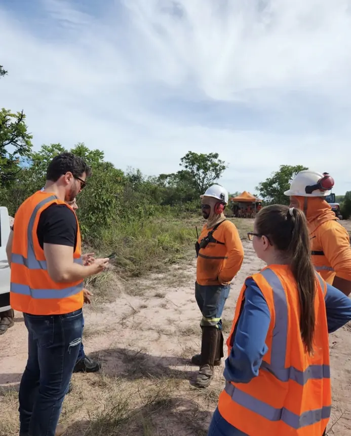
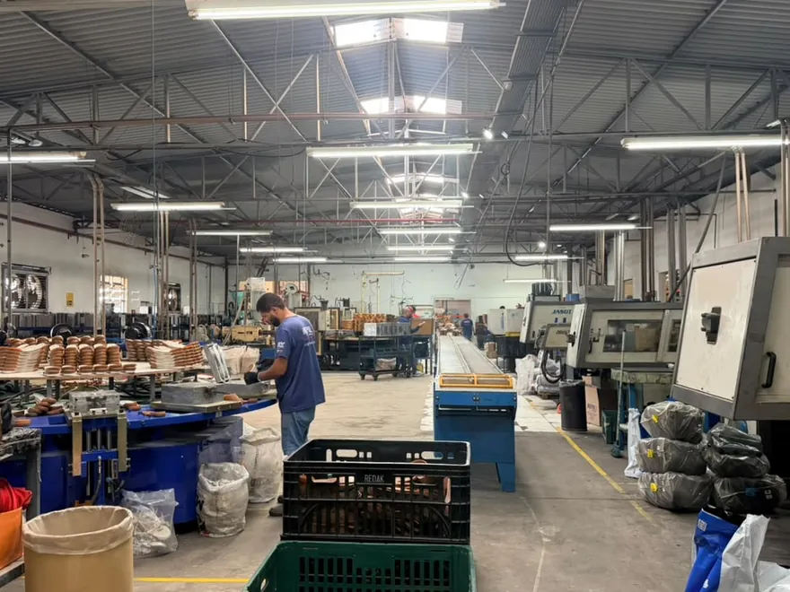
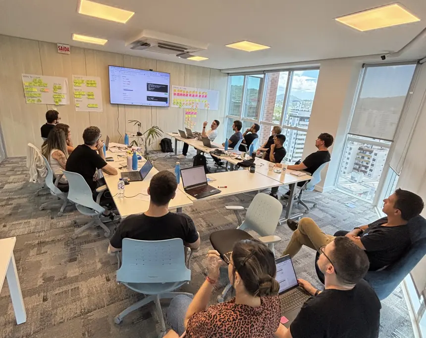
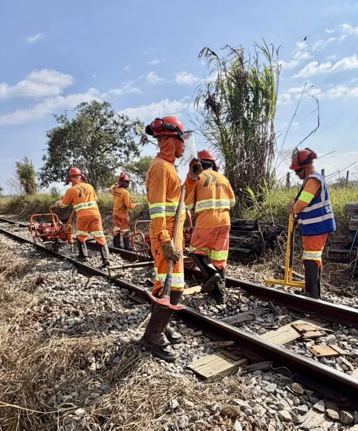
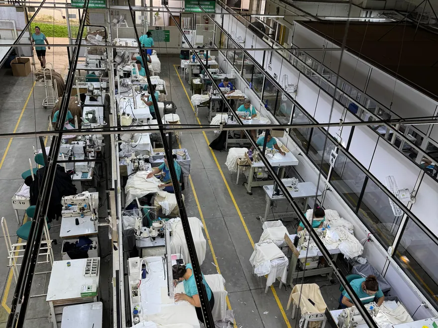
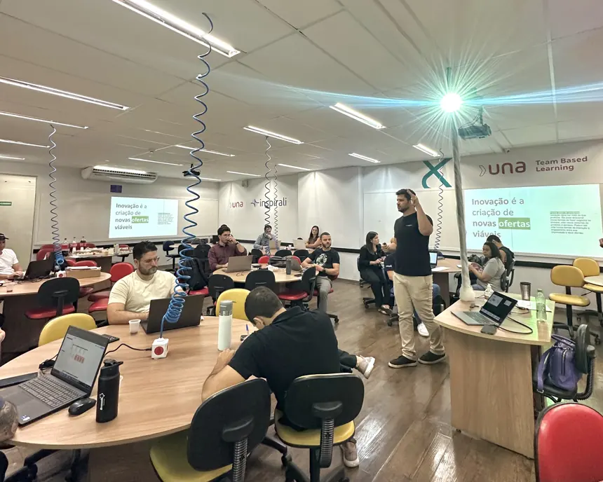
O próximo passo
A primeira conversa é de 30 minutos e serve para uma coisa só: entender a sua necessidade e apontar onde estão as maiores oportunidades. Se fizer sentido para os dois lados, seguimos. Se não fizer, a gente diz.
Entendemos a sua operação.
Definimos o caminho juntos.
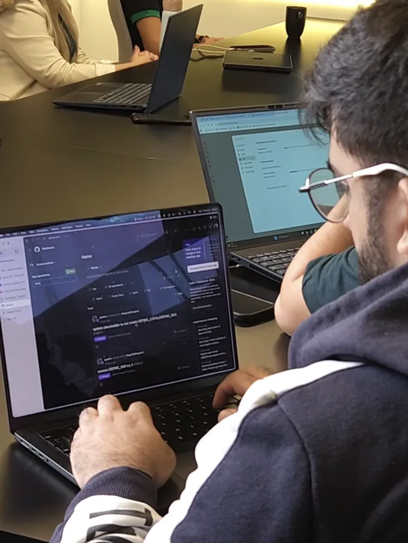
Mão na massa, de ponta a ponta.
Resposta em até 1 dia útil. Falamos com você, com o seu diretor ou com os dois — como for melhor.
Nossos sócios passaram por Deloitte, AB InBev, Vale, Localiza, MRV, Inter e ESAB antes de fundar a Origami. E os nossos clientes são empresas de 1962, 1971, 1978 e 1980 — indústria antiga é o único tipo de empresa com que trabalhamos. Na primeira conversa a gente não apresenta slide: a gente pergunta sobre a sua operação.
Provavelmente tem mais do que imagina. Lei do Bem, FINEP e FAPEMIG existem exatamente para financiar modernização, e a maioria das empresas do porte da sua não usa. Captamos junto com você, em parceria com a PIN — e só cobramos se o capital for liberado.
Ótimo — é mais fácil assim. Não viemos substituir o seu time nem o seu ERP. Viemos destravar o que o seu time já quer fazer há anos e não consegue por falta de braço ou de especialização.
É a história mais comum que ouvimos. Quase sempre a causa é a mesma: alguém construiu o sistema sem entender o processo. A gente começa dentro da operação, não no código — e cada entrega precisa provar resultado antes de a próxima começar.
Pode. Montar esse time leva de 6 a 12 meses entre recrutar, treinar e acertar o passo — e depois você precisa segurar essas pessoas. A gente entra com o time pronto e a experiência já feita. É a comparação em que a gente ganha mais limpo.
Porque o custo de não mexer é invisível até deixar de ser. O mesmo capital que você colocaria em mais uma máquina ou em mais gente, aplicado na operação, rende em eficiência recorrente — e não em ativo parado. A conversa de 30 minutos serve exatamente para você medir isso antes de decidir.
Depende do que o projeto destrava. Não competimos por preço; dimensionamos cada projeto pelo retorno que ele gera em margem, tempo e competitividade. Existe formato a partir de escopo curto e existe formato de modernização de fôlego — e existe a via em que o investimento é parcialmente financiado.
Como referência: projetos de execução ficam entre R$ 50 mil e R$ 500 mil, dimensionados pelo escopo e pelo retorno esperado.
Enviamos a apresentação institucional da Origami em PDF — com os cases, os números e as credenciais. Feita para ser levada para a mesa, não para ficar num e-mail.